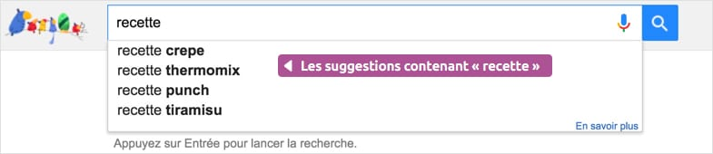
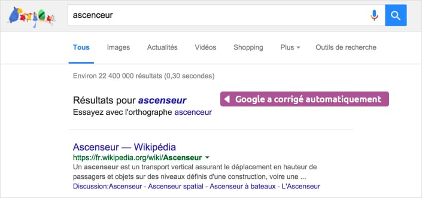

Chercher exclusivement des images
Vous pouvez également faire des recherches d’images exclusivement grâce aux filtres de recherche en haut de l’écran. Faites une recherche standard puis cliquez sur Images :
Vous pouvez également faire des recherches d’images exclusivement grâce aux filtres de recherche en haut de l’écran. Faites une recherche standard puis cliquez sur Images :
Ultra pratique, la suggestion vous affiche une liste de recherches déjà faites par d’autres internautes susceptibles de vous intéresser. Si un terme vous intéresse dans la liste, cliquez dessus et le moteur de recherche affichera les résultats correspondants. Cela vous permet notamment de vous éviter d’avoir à taper une requête en entier.

Pratique ! Si vous faites une recherche qui contient une faute d’orthographe, Google comprendra et vous proposera les résultats avec la version corrigée.
Google fera également une recherche sur les termes synonymes afin de trouver plus de résultats pertinents.
